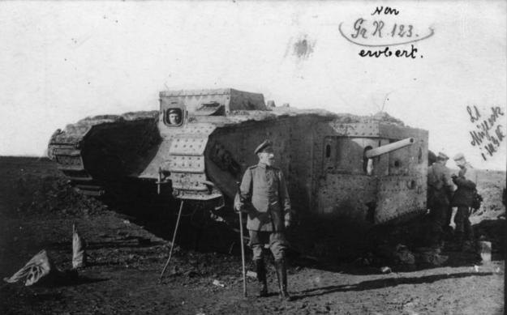

Stand der Recherche: 11.11.2026. Verlustzahlen sind Angaben der jeweiligen Seite; Abgrenzungen (Tote, Verwundete, Gefangene) unterscheiden sich je Quelle.
Eingesetzt wurde die 11. Kompanie des D-Bataillons der Heavy Branch, Machine Gun Corps, unter Major William H. L. Watson. Die neuen Mark IV waren noch nicht verfügbar. Die Kompanie fuhr ältere Mark I und Mark II; die Mark II waren als Ausbildungsfahrzeuge gebaut.
Ein Mark II wog rund 28 Tonnen und fuhr höchstens 4 Meilen, rund 6 km/h. Die Besatzungen saßen nach Brown und Brooks in 35 bis 37 Stunden 14 bis 16 Stunden im Fahrzeug, mit Kohlenmonoxid und Hitze.

Rote Kante: ausgeschaltet oder aufgegeben. Grüne Kante: nicht im Gefecht verloren. Einzelschicksale nach Kriegstagebuch-Auswertungen; Q1 und Q2 nutzen teils dieselben Akten.
| Sektion | Nr. | Kommandant | Verlauf |
|---|---|---|---|
| Rechts | 593 | Lt. Morris | Im Anmarsch festgefahren, später getroffen; Wrack an der Tank Avenue |
| Rechts | 711 | Lt. Puttock | Zog 796 über den Bahndamm, Kupplung defekt, aufgegeben |
| Rechts | 586 | Lt. Clarkson | Über die erste Linie bis zur zweiten, beim Rückweg getroffen; Teile der Besatzung gefangen |
| Rechts | 799 | Lt. Davies | Über die erste Linie, vor der zweiten getroffen; erbeutet, von den Deutschen untersucht |
| Mitte | 702 | Lt. Head | Vor dem Angriff liegen geblieben |
| Mitte | 585 | Lt. McElvaine | Kurz nach dem Start getroffen |
| Mitte | 590 | Lt. Money | Im Draht der ersten Linie festgefahren, mit Handgranaten in Brand gesetzt |
| Mitte | 798 | Lt. Bernstein | Früh getroffen, Fahrer getötet; kam nicht ins Gefecht |
| Links | 796 | Lt. Skinner | Spät über den Bahndamm, bis Bullecourt; im Trichter liegen geblieben, Besatzung zurück |
| Links | 797 | Lt. Birkett | Gegen 06:30 vorn, bekämpfte ein MG in Bullecourt, später am Bahndamm ausgeschaltet |
| Links | 531 | unbekannt | Vor dem Draht östlich Bullecourt getroffen; Endlage unsicher |
| Links | 800 | Lt. Richards? | Beim Rückweg bei Vraucourt Copse ausgeschaltet |
Ob 797 und 800 Bullecourt erreichten, bestreiten Brown und Brooks gegen die Gefechtsskizze des Bataillons. Ältere Berichte, zwei Panzer seien bis Hendecourt gekommen, wies schon der australische Amtshistoriker zurück. Kommandant von 800 nur nach Walker, zitiert in Q1.
Sektionsführer Lt. Hugh Swears ging zu Fuß nach vorn, um 796 zu suchen, und blieb verschollen (Q1Q2).
Leutnant Gotthold Schabel vom Grenadier-Regiment 123 beschießt Panzer 799 auf etwa 150 m mit panzerbrechender K-Munition aus einem Maschinengewehr, bis er liegen bleibt.
Panzer 799 bleibt hinter den deutschen Linien liegen. Die Deutschen vermessen und fotografieren ihn, bauen Teile aus und machen Beschussversuche. 799 wurde einer der meistfotografierten Panzer des Krieges.
Die Panzerung: nach Q12 war 799 „completely unarmoured“, nach Q15 war der Stahl eines Bullecourt-Fundstücks „apparently unhardened“. Wie stark der Stahl war, ist widersprüchlich.
Ein deutscher Befehl verlangt, dass die Infanterie künftig K-Munition mitführt. Nach Einschätzung des Tank Museum hielten die Deutschen den Panzer nun für langsam und verwundbar und stellten eigene Panzerpläne zurück.
Die späteren Mark IV waren gegen K-Munition geschützt (Q1).
Nach dem Angriff beschuldigten australische Kommandeure die Panzerbesatzungen der Feigheit und Unfähigkeit. Ein Bataillonskommandeur beklagte, Panzer hätten auf eigene Truppen geschossen. Major Watson hielt dagegen, seine Panzer seien nicht schuld.
Brown und Brooks kommen 2023 zu dem Schluss, dass sich die Vorwürfe nicht halten lassen: Etwa die Hälfte der Besatzungen fiel aus, die Panzer kamen bis an und in die Hindenburglinie. Die Grabungen von Breaking Ground Heritage stützen diese Sicht.
Deutung, keine gesicherte Tatsache. Die Ausfallquote der Besatzungen ist widersprüchlich: ca. 50 % Ausfälle (Q1) oder die Hälfte getötet (Q7).